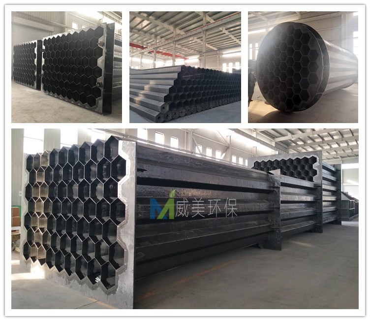
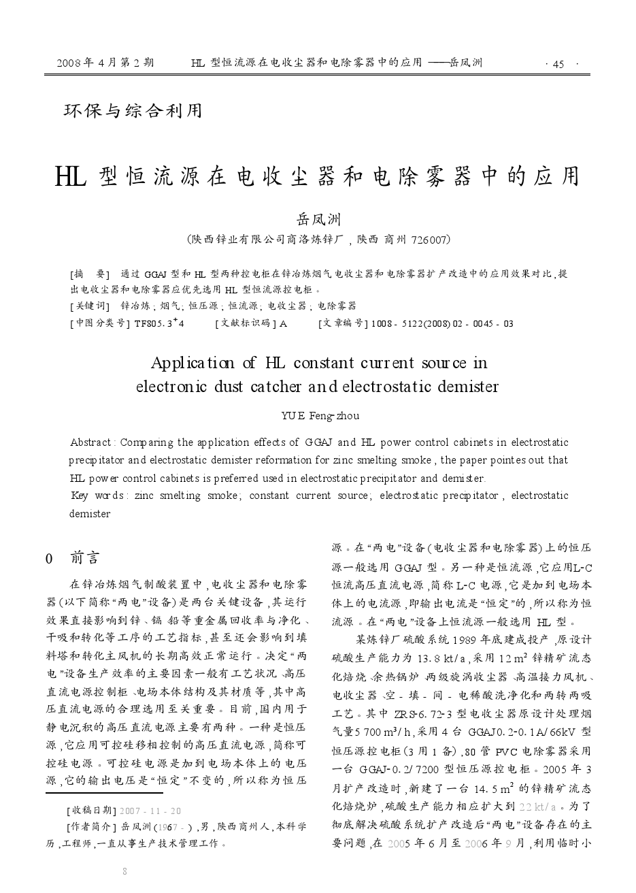
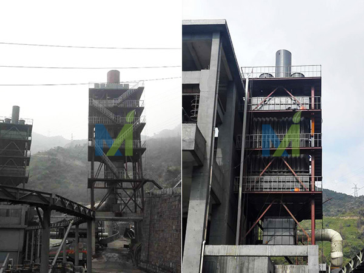
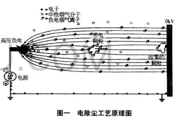
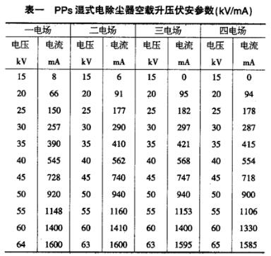
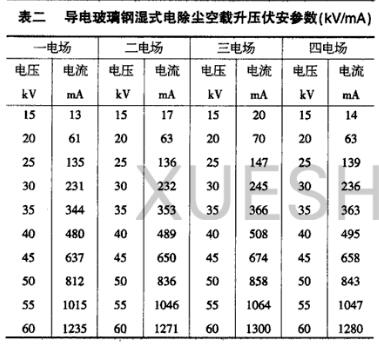
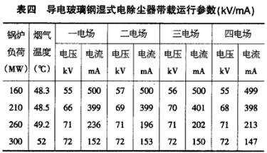

江西华邦复合材料有限公司专业从事电除雾器、湿式电除尘器及阳极管等除尘设备的研发生产
 13870005775
1387000577513870005775
邮箱：jiangxihb@163.com
极线处于恶劣的工作环境中，如果极线断裂，就可能造成电极短路，从而迫使整个电场关闭，失去除尘能力。面在就对阴极芒刺线断线可能出现的原因进行分析，以备参考：
一、极板极线酸性腐蚀：
阴极线有严重的腐蚀现象，造成这种现象主要原因是在极板上亚硫酸、硫酸盐和硫酸氢铵物质含量过高。造成亚硫酸、硫酸盐和硫酸氢铵物质含量过高的重要原因是在脱硝过程中由于氨的不完全反应，SCR 烟气脱硝过程氨逃逸是难免的，氨逃逸率主要取决于以下因素：注入氨流量分布不均、设定的NH3/NOx 摩尔比不合理、反应温度过低、催化剂堵塞、催化剂老化和机组的负荷等有关，尤其是在脱硝运行设计参数下，机组的负荷变化是决定氨逃逸的重要因素。反应生成的SO3 进一步同烟气中逃逸的氨反应，生成硫酸氢铵和硫酸铵。同时烟气在接近甚至低于其露点温度、壳体漏入冷空气或开、停机较频繁等情况下，致使气体在电场内结露，并与SO2 和由部分SO2 转化成的SO3 作用，生成亚硫酸和硫酸盐，严重腐蚀极板、极线和钢构件。硫酸氢铵的形成同时依赖于温度，当烟气温度略低于硫酸氢铵的初始形成温度时，硫酸氢铵即开始形成。硫酸氢铵是一种粘性很强的物质，很容易沉积在极板上，并促使其与大量飞灰附着极板上，从而影响其传热性能，增大其阻力，会导致温度、烟气流速等发生变化，从而对硫酸氢铵的形成产生影响，随着锅炉运行负荷的降低，烟气流量降低，氨逃逸率的增加会使得亚硫酸、硫酸盐和硫酸氢铵物质的增加，造成极板腐蚀加剧，在振打的作用下加速了腐蚀极线的断裂。

湿式电除尘铅极线
二、阴极线设备原因：
1、 阴极线安装问题（主要原因）：由于极限线安装量较大，在安装过程中监督不到位，存在大量极线和框架的连接紧固螺栓紧固不到位，使运行振打过程中的极线在框架连接位置晃动剧烈，由于极线连接处材料较薄，且连接处不牢固通电不良反复产生放电火花点蚀，造成连接处断裂。
2、阴极框架变形：框架向内变形使阴极线安装距离过小弯曲，振打时弯曲的极线容易产生激烈振动造成连接处断裂。框架向外变形是极线安装距离过大，极线存在一个向外拉伸的应力，在振打里的作用下容易产生断裂。
三、电击损坏：
由于灰斗堵灰等使阴阳极通过煤灰作为介质形成短路，短路产生的电弧击穿或击断极线极板。另检修产生的金属异物或阴阳极间距过小产生的电弧也可击穿或击断极线极板。
湿式电除尘阴极线
四、运行振打周期：
振打周期设置过频，由于以上几点固有缺陷加快了连接处的金属疲劳断裂。
阴极线频繁断裂的原因就分析到这，希望对您的生产有所帮助。

5W气量湿电除尘器发货湖北，除尘器设计流速为1m/s，发货现场见附图
随着超低排放实施规模的扩大，多种技术路线方案均有应用。湿式电除尘技术作为烟尘超低排放主要技术路线已在全国燃煤电厂、化工、金属冶炼、生物质锅炉、水泥、玻璃行业成功应用实施，该技术对烟尘、细颗粒物PM2.5、硫酸雾、重金属汞等多种污染物控制效果显著。
该湿式电除尘器阳极管组材质为耐HF腐蚀上纬915乙烯基阻燃树脂，阳极管六棱管，弯曲，扭转等变形符合DL/T514-2004《电除尘器》的有关规定或更高标准。阴极线材质为铅锑合金。除尘器进风方式为下进上出。

5W气量湿式电除尘器发货湖北
4月21日，受国务院委托，李干杰向十三届全国人大常委会第十次会议作关于2018年度环境状况和环境保护目标完成情况报告。报告指出，2018年全国大气和水环境质量进一步改善，土壤环境风险得到基本管控，生态系统格局整体稳定，核与辐射安全水平巩固提升，环境风险态势保持稳定。
国务院关于2018年度环境状况和环境保护目标完成情况的报告
——2019年4月21日在第十三届全国人民代表大会常务委员会第十次会议上
生态环境部部长 李干杰
全国人民代表大会常务委员会：
按照环境保护法规定和全国人大常委会安排，受国务院委托，现就2018年度环境状况和环境保护目标完成情况报告如下，请审议。
过去的2018年是我国生态环境保护事业发展史上具有里程碑意义的一年。全国生态环境保护大会胜利召开，习近平总书记出席会议并发表重要讲话，李克强总理作工作部署。党中央、国务院对加强生态环境保护、提升生态文明、建设美丽中国作出一系列重大决策部署。在理念引领方面，全国生态环境保护大会正式确立习近平生态文明思想，为推进美丽中国建设、实现人与自然和谐共生的现代化提供了方向指引和根本遵循。在顶层设计方面，中共中央、国务院印发《关于全面加强生态环境保护坚决打好污染防治攻坚战的意见》，明确打好污染防治攻坚战的路线图、任务书、时间表。在法治保障方面，十三届全国人大一次会议表决通过宪法修正案，把新发展理念、生态文明和建设美丽中国的要求写入宪法，为努力实现这一宏伟奋斗目标提供了有力的宪法保障。在机构改革方面，加强和完善生态环境保护职能，进一步优化相关部门生态环境保护职责。新组建生态环境部，统一行使生态和城乡各类污染排放监管与行政执法职责，同时组建生态环境保护综合执法队伍。
十三届全国人大常委会为全面加强生态环境保护、坚决打好污染防治攻坚战发挥了重要指导和推动作用。2018年，把大气污染防治法执法检查作为监督工作的重中之重，栗战书委员长亲自担任执法检查组组长，并带队进行实地检查。经党中央批准，十三届全国人大常委会专门加开第四次会议，听取和审议大气污染防治法执法检查报告，作出《关于全面加强生态环境保护依法推动打好污染防治攻坚战的决议》(以下简称《决议》)，以法律的武器治理污染，用法治的力量保护生态环境。
各地区各部门以习近平新时代中国特色社会主义思想为指导，全面贯彻党的十九大和十九届二中、三中全会精神，深入贯彻习近平生态文明思想和全国生态环境保护大会精神，按照党中央、国务院决策部署，蓝天、碧水、净土保卫战全面展开，污染防治攻坚战取得重大进展，生态环境状况明显好转。
一、2018年生态环境状况
全国大气和水环境质量进一步改善，土壤环境风险得到基本管控，生态系统格局整体稳定，核与辐射安全水平巩固提升，环境风险态势保持稳定。总的来看，我国生态环境质量持续改善，出现稳中向好趋势，但成效并不稳固，稍有松懈就有可能出现反复。
(一)大气环境状况。全国338个地级及以上城市中有121个城市达标，占35.8%;全年优良天数比率79.3%，重度及以上污染天数比率2.2%;细颗粒物(PM2.5)年均浓度39微克/立方米，超标11.4%;可吸入颗粒物(PM10)年均浓度71微克/立方米，超标1.4%;二氧化硫(SO2)、二氧化氮(NO2)、臭氧(O3)、一氧化碳(CO)年均值达标。主要有以下特点：
一是空气质量继续改善，污染程度有所减轻。全国338个地级及以上城市优良天数比率同比提高1.3个百分点，重度及以上污染天数比率同比下降0.3个百分点，空气质量达标城市同比增加22个;PM2.5浓度同比下降9.3%，“十三五”以来累计下降22%;SO2浓度同比下降22.2%，NO2浓度同比下降6.5%，O3浓度同比上升1.3%，CO浓度同比下降11.8%。重污染天气过程的峰值浓度、污染强度、持续时间和影响范围均明显降低。
二是重点区域明显好转，秋冬季重污染依然多发。京津冀及周边地区、长三角地区PM2.5浓度同比分别下降11.8%、10.2%，其中，北京市PM2.5浓度为51微克/立方米，同比下降12.1%。汾渭平原PM2.5浓度同比下降10.8%，扭转了2015年以来连续恶化的趋势。但是，京津冀及周边地区、汾渭平原PM2.5年均浓度分别超标71.4%、65.7%，仍然处于高位，秋冬季以来多次发生重污染天气过程。
三是大气污染治理日趋复杂，空气质量大幅改善难度加大。京津冀及周边地区PM2.5的多种组分均有不同幅度下降，硝酸盐超过硫酸盐成为PM2.5最主要的二次无机组分;同时O3浓度普遍上升，氮氧化物和挥发性有机物防治问题更加凸显。随着大气污染治理边际递减效应逐步显现，产业、能源、运输结构调整优化还需要一个过程，继续大幅改善空气质量的难度加大。
(二)水环境状况。全国地表水国控断面Ⅰ—Ⅲ类水体比例71%，劣Ⅴ类水体比例6.7%。主要有以下特点：
一是地表水水质持续改善，主要指标同比向好。全国地表水Ⅰ—Ⅲ类水体比例同比提高3.1个百分点，劣Ⅴ类水体比例同比降低1.6个百分点。36个重点城市(直辖市、省会城市、计划单列市)黑臭水体治理对水环境质量改善效果明显，涉及的101个国控断面中，Ⅰ—Ⅲ类水体比例同比提高3个百分点，劣Ⅴ类水体比例同比降低4.9个百分点。
二是重点流域水质稳中向好，部分流域有所波动。长江、黄河、珠江等十大流域Ⅰ—Ⅲ类水质断面比例同比提高2.5个百分点，劣Ⅴ类水质断面比例同比降低1.5个百分点。其中，长江流域Ⅰ—Ⅲ类水质断面比例为87.5%，同比提高3个百分点;劣Ⅴ类水质断面比例为1.8%，同比降低0.4个百分点。辽河和松花江流域Ⅰ—Ⅲ类水体比例同比下降、劣Ⅴ类水体比例同比上升，水质有所下降。
三是重点湖库水质有所好转，水生态环境问题依然突出。开展监测的111个重点湖库中，水质优良(Ⅰ—Ⅲ类水质)湖库占66.7%，同比提高4.2个百分点;劣Ⅴ类水质湖库占8.1%，同比降低2.6个百分点。总磷仍是重点湖库的首要污染物。巢湖、滇池累计水华面积同比增加。
(三)海洋环境状况。我国管辖海域海水水质维持较好水平，夏季符合一类标准的海域面积占96.3%。全国近岸海域水质优良(一、二类水质)比例为74.6%，同比提高6.8个百分点。渤海近岸海域水质一般，主要污染指标为无机氮。9个重要河口海湾中，北部湾水质为优，胶州湾水质良好，辽东湾水质变差，其他河口海湾水质基本保持稳定。持久性有机污染物、微塑料等新型污染问题逐步显现。
(四)土壤环境状况。全国土壤环境风险管控进一步强化，部分地区耕地土壤污染加重趋势得到初步遏制。污染地块再开发利用环境风险依然存在，部分重有色金属矿区周边耕地土壤重金属问题突出，固体废物及危险废物非法转移、倾倒导致的土壤污染不可忽视。
(五)生态系统状况。全国生态状况总体呈改善趋势。森林覆盖率和草原综合植被盖度稳中有升。2018年完成的全国生态状况评价显示，生态环境状况优良县域共1561个，同比增加103个。我国生态环境依然脆弱，局部区域因开发建设导致的生态退化等问题还比较严重，生物多样性下降的总趋势尚未得到有效遏制。
(六)核与辐射安全状况。全国核安全态势总体平稳。未发生国际核与辐射事件分级表2级及以上事件事故。放射源辐射事故发生率持续降低，稳定在万分之一以下。全国辐射环境质量和重点设施周围辐射环境水平总体良好。
(七)环境风险状况。全国环境风险态势保持稳定，环境风险管理得到加强。全年共发生各类突发环境事件286起，同比下降5.3%。但环境安全形势依然严峻，涉危险化学品、危险废物、重金属等重大环境风险源大量存在，重大突发环境事件仍有发生。
二、生态环境保护目标和任务完成情况
2018年，生态环境保护9项约束性指标年度目标全部完成，达到“十三五”规划序时进度要求。全国地级及以上城市空气质量优良天数比率为79.3%，好于年度目标0.3个百分点;PM2.5未达标地级及以上城市浓度下降10.4%，好于年度目标8.4个百分点;全国地表水Ⅰ—Ⅲ类水体比例为71%，好于年度目标2.6个百分点;劣Ⅴ类水体比例为6.7%，好于年度目标0.6个百分点;二氧化硫、氮氧化物排放量同比下降6.7%、4.9%，均超过下降3%的年度目标;化学需氧量、氨氮排放量同比下降3.1%、2.7%，均超过下降2%的年度目标;单位国内生产总值二氧化碳排放量下降4%，好于年度目标0.1个百分点。
过去的一年，各地区各部门扎实推进污染防治攻坚战，协同推进经济高质量发展和生态环境高水平保护，主要做了以下工作。
(一)继续加强生态环境立法和督察执法。国务院各有关部门认真贯彻《决议》要求，制定落实方案;贯彻落实新颁布的核安全法和新修订的水污染防治法等相关法律。配合全国人大常委会制定土壤污染防治法，修改环境影响评价法、环境噪声污染防治法等，开展大气污染防治法、海洋环境保护法执法检查。配合开展长江保护法立法调研，推进固体废物污染环境防治法等法律修订工作。国务院办公厅印发《关于开展生态环境保护法规、规章、规范性文件清理工作的通知》，各地区各部门共完成1.1万余件相关文件清理。加快完善危险废物经营许可管理、报废机动车回收管理等方面制度。
分两批对江西等20个省(区)开展中央生态环境保护督察“回头看”，公开通报103个典型案例，推动解决7万多个群众身边的生态环境问题。针对一些地区和企业存在的突出问题，开展机动式、点穴式专项督察。严格生态环境监管执法，全国实施行政处罚案件18.6万件，罚款数额152.8亿元，同比增长32%。严厉打击各类环境犯罪活动，各地侦破环境犯罪刑事案件8000余起。落实生态环境保护行政执法与刑事司法衔接制度，联合挂牌督办、现场督导大案要案。协同推进生态环境公益诉讼，各级人民法院共受理社会组织和检察机关提起的环境公益诉讼案件1800多件。
(二)全面推进蓝天保卫战。国务院印发实施《打赢蓝天保卫战三年行动计划》。成立京津冀及周边地区大气污染防治领导小组，建立汾渭平原大气污染防治协作机制，完善长三角区域大气污染防治协作机制。发布实施《柴油货车污染治理攻坚战行动计划》。推进重点区域秋冬季大气污染综合治理攻坚，开展蓝天保卫战重点区域强化监督，向地方政府交办涉气环境问题2.3万个。全国实现超低排放的煤电机组约8.1亿千瓦，占煤电总装机容量的80%。非化石能源消费比重达到14.3%。北方地区冬季清洁取暖试点城市由12个增加到35个，完成散煤治理480余万户，确保群众温暖过冬和清洁取暖。在重点区域启动钢铁行业超低排放改造。加强“散乱污”企业及集群综合整治，推进燃煤锅炉节能减排。煤炭等大宗物资运输加快向铁路运输转移，铁路货运量同比增加9.1%。推动老旧机动车报废更新。进一步扩大船舶排放控制区范围，推进岸电建设与使用。全国全面供应符合国六标准的车用汽柴油，实现车用柴油、普通柴油、部分船舶用油“三油并轨”。强化区域联防联控，切实做好重污染天气应对。
(三)着力推进碧水保卫战。深入实施《水污染防治行动计划》。制定实施城市黑臭水体治理、渤海综合治理、长江保护修复、水源地保护、农业农村污染治理攻坚战行动计划或方案。推进全国集中式饮用水水源地环境整治，1586个水源地6251个问题整改完成率达99.9%。开展城市黑臭水体治理专项行动，36个重点城市1062个黑臭水体中，1009个消除或基本消除黑臭。国务院办公厅印发《关于加强长江水生生物保护工作的意见》。出台中央财政促进长江经济带生态保护修复奖励政策实施方案。完成长江干线1361座非法码头整治。国务院印发实施《关于加强滨海湿地保护严格管控围填海的通知》。11个沿海省份编制实施近岸海域污染防治方案。开展湾长制试点。加强农业面源污染防治，支持300个市县开展化肥减量增效示范，深入实施农膜回收行动和东北地区秸秆处理行动。加快推进农村人居环境整治，总结推广浙江“千村示范、万村整治”经验，全年完成2.5万个建制村环境综合整治。
(四)稳步推进净土保卫战。全面落实《土壤污染防治行动计划》。做好农用地土壤污染状况详查，完成样品采集和分析测试工作。开展涉重金属行业污染耕地风险排查整治，加强建设用地土壤污染风险管控，推进土壤污染防治试点示范建设。国务院办公厅印发《“无废城市”建设试点工作方案》。推进生活垃圾分类处置和非正规垃圾堆放点整治。坚定不移推进禁止洋垃圾入境，集中打击洋垃圾走私，2018年全国固体废物进口量同比减少46.5%。严厉打击固体废物及危险废物非法转移和倾倒行为，挂牌督办的1308个突出问题中1304个完成整改。推进垃圾焚烧发电行业达标排放，存在问题已全部完成整改。
(五)大力开展生态保护和修复。初步划定京津冀、长江经济带11省(市)和宁夏回族自治区等15个省份生态保护红线，山西等16个省份基本形成划定方案。国家公园体制试点稳步推进。国家级自然保护区增加到474处。实施退耕还林还草、退牧还草工程。整体推进大规模国土绿化行动，完成造林绿化1.06亿亩。恢复退化湿地107万亩，新增水土流失治理面积5.4万平方公里。推进第三批山水林田湖草生态保护修复工程试点工作。开展“绿盾2018”自然保护区监督检查专项行动。
(六)严格核与辐射安全监管。开展“核安全法实施年”活动。全面实施核安全监管综合管理体系。依法严格核设施安全监管，聚焦核设施运行风险，保障45台运行核电机组、19座民用研究堆和临界装置等运行安全，11台在建核电机组质量受控。加强核安全基础能力建设，继续推进国家辐射环境监测网络自动站建设。开展核安全国际合作。
(七)建立健全绿色低碳循环发展的经济体系。印发生态环境领域进一步深化“放管服”改革推动经济高质量发展的指导意见。推动绿色金融发展，实施创新和完善促进绿色发展价格机制的意见。推广绿色包装、绿色回收，推进绿色低碳产品认证。编制长江经济带11省(市)及青海省“三线一单”(生态保护红线、环境质量底线、资源利用上线和生态环境准入清单)，引导和优化产业布局。修订产业结构调整指导目录，发布产业发展与转移指导目录。全年压减粗钢3500万吨以上、退出煤炭落后产能2.7亿吨，提前完成“十三五”目标任务。资源循环利用基地建设有序推进，单位国内生产总值能耗同比下降3.1%。推动实施绿色制造重点建设项目，大力推广新能源汽车。推进温室气体与污染物协同治理，开展各类低碳试点示范。积极参加《巴黎协定》实施细则谈判，推动联合国卡托维兹气候变化大会达成一揽子全面、平衡、有力度的成果。
(八)加快落实生态环境改革措施。全面推开省以下生态环境机构监测监察执法垂直管理制度改革工作，实施按流域设置生态环境监管和行政执法机构。推进国家生态文明试验区建设。开展生态环境损害赔偿制度改革。全面推行领导干部自然资源资产离任审计工作。出台建立市场化、多元化生态保护补偿机制行动方案。开展自然资源资产负债表编制试点工作。推进环境信息强制性披露制度改革。实施控制污染物排放许可制，累计完成18个行业3.9万多家企业排污许可证核发。落实《关于深化环境监测改革提高环境监测数据质量的意见》，通报山西临汾等地监测数据造假等反面典型案例。
(九)进一步强化各项保障措施。中央财政加大投入力度，安排生态环境保护及污染防治攻坚战相关资金2555亿元。扎实推进第二次全国污染源普查。圆满完成1881个国家地表水水质自动站新建和改造工作，顺利完成空气质量自动监测状态转换。强化重点区域大气污染防治气象保障服务能力建设。现行有效国家环境保护标准达到1970项。深入实施大气重污染成因与治理攻关项目，对京津冀及周边地区、汾渭平原及雄安新区进行长期驻点研究和“一市一策”技术指导。完善公众监督、举报反馈和奖励机制，全国首批124家环保设施和城市污水垃圾处理设施向公众开放。扎实开展绿色“一带一路”建设相关工作，稳步推进环境国际公约履约。
我们也清醒认识到，我国生态环境保护形势依然严峻，打好污染防治攻坚战面临多重挑战。一是面对经济下行压力加大，部分地方抓好生态环境保护的劲头发生了松动，将经济下行压力简单归结于环境监管过严的模糊认识有所抬头，放松环境监管的风险有所增加。二是环境治理越来越要啃硬骨头，一些问题解决的难度在加大。部分地区仍对传统产业存在路径依赖，结构性污染问题突出。生态环境风险依然较高，突发环境事件时有发生。三是有的地方、有的领域环境治理基础薄弱，工作难度较大。城乡发展和环境治理不平衡，农村地区环境基础设施建设严重滞后，一些地方农村人居环境仍然存在“脏乱差”现象。四是生态环境队伍薄弱，尤其是基层专业人员缺乏，管理的科学化、精细化、信息化水平亟待提高。五是生态环境质量持续改善的基础还不稳固，受自然条件变化影响较大，需要用更多更大的减排量抵消不利气象条件带来的负面影响。我们将正视这些问题和挑战，保持加强生态文明建设的战略定力，不能放宽放松，更不能走“回头路”，保持攻坚力度和势头，扎实推进污染防治攻坚战。
三、2019年生态环境保护工作安排
2019年是新中国成立70周年，是打好污染防治攻坚战、决胜全面建成小康社会的关键一年。生态环境保护工作将坚持以习近平新时代中国特色社会主义思想为指导，按照党中央、国务院决策部署，坚守阵地、巩固成果，保持定力，不动摇、不松劲、不开口子，坚定不移深入贯彻习近平生态文明思想，坚定不移全面落实全国生态环境保护大会精神，坚定不移打好污染防治攻坚战，坚定不移推进生态环境治理体系和治理能力现代化，坚定不移打造生态环境保护铁军，做到稳中求进、统筹兼顾、综合施策、两手发力、点面结合、求真务实，聚焦打赢蓝天保卫战等七大标志性战役，严格监管与优化服务并重，引导激励与约束惩戒并举，加大工作和投入力度，进一步改善生态环境质量，让人民群众有更多更直接更实在的获得感、幸福感、安全感。
2019年度生态环境保护主要目标是：地级及以上城市空气质量优良天数比率提高到79.4%，PM2.5未达标地级及以上城市浓度同比下降2%，地表水达到或好于Ⅲ类水体比例提高到71.3%，劣Ⅴ类水体比例下降到6%，化学需氧量、氨氮、二氧化硫、氮氧化物排放量同比分别下降2%、2%、3%、3%，单位国内生产总值二氧化碳排放量同比下降3.6%左右。
为确保完成年度目标，我们将重点抓好以下工作。
(一)积极推动经济高质量发展。贯彻新发展理念，探索以生态优先、绿色发展为导向的高质量发展新路子。实施“一带一路”建设、京津冀协同发展、长江经济带发展、粤港澳大湾区建设、长三角区域一体化发展等国家重大战略，打造高质量发展“雄安样板”，推进海南生态文明试验区建设。实施国家节水行动。推进全国“三线一单”编制和落地。加快淘汰落后产能和化解过剩产能。实施工业污染源全面达标排放计划，积极推进重点行业排污许可证核发。加强绿色供应链建设，大力发展节能环保产业。深入实施积极应对气候变化国家战略。
(二)坚决打好污染防治攻坚战标志性战役。将打赢蓝天保卫战作为重中之重，突出重点区域、重点指标、重点时段、重点领域防控。扎实开展重点区域秋冬季攻坚行动。稳妥推进散煤治理，继续实施清洁取暖。坚决治理“散乱污”企业，积极推进钢铁行业超低排放改造。统筹“油、路、车”，加强柴油货车污染治理。有效应对重污染天气。深入落实《水污染防治行动计划》，系统推进水污染防治、水生态保护和水资源管理，保好水、治差水。全面实施城市黑臭水体治理、渤海综合治理、长江保护修复、水源地保护、农业农村污染治理攻坚战行动计划或方案。开展入河、入海排污口排查整治试点。启动城镇污水处理提质增效三年行动。推进建制村环境综合整治。贯彻落实土壤污染防治法，持续实施《土壤污染防治行动计划》，着力加强土壤环境风险管控。做好农用地详查成果集成。加强地下水污染防治，推进华北地区地下水超采综合治理。继续做好禁止洋垃圾入境推进固体废物进口管理制度改革工作。开展“无废城市”建设试点，实施废铅蓄电池污染防治行动方案。
(三)加强生态保护与修复。统筹山水林田湖草系统治理，加快国土绿化和生态保护修复进程。开展生态保护红线勘界定标，推进生态保护红线监管平台建设。开展长江经济带等重点区域生态状况调查评估。制定自然保护地生态环境监管办法。继续实施生物多样性保护重大工程。深入开展生态文明示范创建。做好《生物多样性公约》第十五次缔约方大会筹备工作。
(四)保障核与辐射安全。深入贯彻核安全法，加快核与辐射安全配套法规标准制修订，优化核安全体制机制，全面落实国家核安全政策。进一步规范和严格核电厂、研究堆与核燃料循环设施安全监管。加强放射性物品运输管理，推进历史遗留放射性废物处理处置，强化铀矿冶、伴生矿和电磁辐射安全监管。加快辐射环境监测网络建设。
(五)推进生态环境督察执法。配合做好水污染防治法、可再生能源法执法检查和后续整改落实，认真研究办理大气污染防治法、海洋环境保护法等有关执法检查报告及其审议意见，继续推动制定长江保护法，及时提请审议固体废物污染环境防治法草案。加快排污许可管理、生态环境监测等领域行政法规制修订。完善中央和省两级督察体系，启动第二轮中央生态环境保护督察。深入推进生态环境保护综合行政执法改革、省以下生态环境机构监测监察执法垂直管理制度改革，加快组建流域生态环境监管执法机构。严格生态环境保护执法，统筹安排强化监督，既督促解决好人民群众反映强烈的突出环境问题，又主动加强对企业治污的指导帮扶。
(六)完善支撑保障体系。加大生态环境治理投入力度，推行环境污染第三方治理，健全绿色金融、生态保护补偿机制。基本完成第二次全国污染源普查工作。深入开展大气污染成因与治理、长江流域生态保护与修复等重点领域科技攻关。进一步完善生态环境监测体系，强化监测数据质量管理。加快推动环境质量不达标地区依法制定和落实限期达标规划。开展生态环境保护相关配套制度、标准和技术规范的研究、评估和制修订。强化生态环境风险防范措施，妥善应对突发环境事件。加强生态环境宣传教育和舆论引导，广泛动员和鼓励公众参与。
委员长、各位副委员长、秘书长、各位委员，长期以来，全国人大常委会高度重视、大力支持生态环境保护工作，不断加强立法、实施监督和执法检查，为改善生态环境质量、推进生态文明建设、建设美丽中国作出了重要贡献。我们将更加紧密地团结在以习近平同志为核心的党中央周围，在全国人大及其常委会监督支持下，进一步加大生态环境保护工作力度，坚决打好污染防治攻坚战，协同推进经济高质量发展和生态环境高水平保护，以优异成绩庆祝中华人民共和国成立70周年。
来源：中国人大

阳极管按材料分为：导电玻璃钢阳极管，不锈钢（304、316L、2205）阳极管；
玻璃钢阳极管结构形式为内切圆360mm正6边形，壁厚3mm，长度为：6000mm；
玻璃钢阳极管介绍:http://www.cnwesp.com/product/product89.html
不锈钢阳极管结构形式为内切圆360mm正6边形，壁厚1.5mm，长度为：6000mm；
不锈钢阳极管:http://www.cnwesp.com/product/product88.html
把多根阳极管组合，形成蜂窝状阳极管束作为湿电除尘器沉淀电极。组装并加强后，作为一个整体，与上下壳体连接，阳极管制作严格按国家相关以及行业标准要求执行，合格沉淀管内表面应平整顺滑；
玻璃钢阳极管内表面含有碳纤维及阻燃剂的耐磨阻燃导电层，壁厚均匀并且管端面和轴线成直角、无毛刺，外观无任何形式的缺陷，主要导电方式是通过碳纤维毡和水膜导电；。
玻璃钢阳极管采用新技术导电玻璃钢，为CFRP导电碳纤维强化复合材料，由玻璃纤维、石墨粉、树脂材料以及各种添加剂通过模压、缠绕、手糊成型、以及防紫外线 防老化等工艺制成。内表面平整光洁易冲洗，阻燃以及抗腐蚀性强，可以抗各种酸（硫酸、盐酸、氢氟酸等）和强碱的腐蚀。其导电性、机械强度、耐温性能以及抗老化性完全满足阳极材料的使用要求
由阳极管组成的管束构成湿电除尘器的阳极系统，下面，保定美田环保就详细叙述一下两种阳极管的材质及特点：
导电玻璃钢阳极管详细介绍
导电玻璃钢阳极管（沉淀电极）所用玻璃钢的层状结构从内到外依次为：１层碳纤维垫、２层短切纤维条状垫、３ 层0.4mm厚的玻纤布以及ｌ层玻璃表 面垫，树脂采用乙烯基树脂，其中含有高含碳量（＞９８％）石墨、阻燃剂等，这种材质的导电玻璃钢具有强度高、刚性好、导电性能好、阻燃等优点。
导电玻璃钢阳极管-蜂窝管束特点

不锈钢阳极管详细介绍
湿电除尘用导电不锈钢阳极管-合金钢阳极管，它具有导电性好、韧性高等特点，是目前国际上最经典的一种合金钢阳极管，不锈钢阳极管具有以下特点：
1、不锈钢阳极管具有安装方便，能确保每个模块相互连通，确保导电性能稳定。
2、不锈钢阳极管管壁内表面光滑平整，内壁冲洗清洁方便，无对使用性能有影响的龟裂、分层、针孔等不良现象；
3、不锈钢阳极管端面平整，不会出现管径和管长偏差，拉伸强度高，耐磨性强，防腐性能高，高温时不变形，使用寿命长，合金钢材料还可以二次回收利用。
4、不锈钢阳极管维护和清理都很方便。合金钢阳极管在组装生产工艺上采用全自动的焊接工艺，模块上部设双层合金钢法兰，中间用合金钢加筋板进行加强，保证焊接处永远不会脱落和击穿，法兰尺寸、厚度及筋的密度，严格按需方图纸要求设计生产制造。
不锈钢阳极管常用材质有SUS304、SUS316L、2205双相合金钢、254SMO超级奥氏体级不锈钢材料等。

随着的实施和《中华人民共和国环境保护税法》（草案）的审议，砖厂环保治理的话题很是紧迫，其中为治理烟气上脱硫塔更首选。如果仅仅上一座脱硫塔就能解决的问题还会引起行业的恐慌吗？恐怕事情没那么简单。所以才有了写此文的想法，谈一谈笔者对砖厂大气污染物治理的一些浅显看法，提醒同仁砖厂脱硫不单单是“塔”的事。
一、对政策的理解
2016年7月1日正式实施的颁布之初，就有行业人士赋予了他“世上最严”标准的定性，呼吁要降低标准，给砖瓦企业一条生路。但这种呼吁没有得到一丁点的支持，恰恰相反，《中华人民共和国环境保护税法》（草案）2016年8月底又摆在了全国人大的桌面上去审议。两个文件一前一后，相互叠加，时间之巧合，步伐之紧凑，就不难看出砖瓦行业要面临什么样一种局面。一个是强制性标准，另一个是排污费改税，这两个都是砖瓦企业不能触碰的红线，也是关系到企业生死存亡的关键。
难道国家真的要置砖瓦行业与死地吗？恰恰相反，我认为这是政府借助环保这面大旗，是对砖瓦行业的无序发展、低档次重复建设、产品质量低劣等现状的警告。从以下两张我们常见的烧结砖照片来看，砖瓦行业的现状就一目了然了。
之所以用“常见”二字，表明一个阶段我们砖瓦企业带给社会的是什么样的产品。无序发展导致恶性竞争，低价格导致产品质量低劣，低档次建设消耗了大量的能源，没有控制的污染物排放给环境造成了负担。。。。。。所以，两个文件不只是砖瓦环保的问题，其中的内涵很多，包含了行业的规范、有序、良性发展要求，也是目前砖瓦行业治“乱”的良药和契机。
这次砖瓦行业环保“地震”，不但是砖瓦生产企业的事，从设计、装备、工艺、技术、产品等各个环节都是一次根本观念的冲击，通过这次洗礼，我们才能是真正的砖瓦人。面对这样的形势，砖瓦企业要生存发展就不是一座脱硫塔能解决的。
二、对脱硫塔的看法
我们习惯将烟气治理设备简单的称作“脱硫塔”，本文也是如此。习惯可以改变，但真正的要花真金白银上脱硫塔时，还得从两个方面仔细考虑一下才对，否则，即使安装了脱硫塔，还是被关停，这样的例子已经有了，所以，提醒企业要谨慎，要充分了解脱硫塔的功能和砖厂的实际。目前的脱硫塔均来自电厂、锅炉常使用的脱硫设施，对这些只利用热量的企业来讲，脱硫效果能达到要求，如果直接搬运到砖厂，就要考虑考虑了。砖厂设计各有特色，可以讲五花八门，没有国家和行业规范，再加上原料不同，工艺设备、施工安装质量、员工操作技能高低等因素，每条生产线都有各自的特点，这种情况下，所有的砖厂都把一种产品当成救命稻草肯定是不现实的。脱硫塔进入砖厂也就是这两年的事，加上脱硫塔设计、生产企业对砖瓦行业没有针对性的研发，只是简单的照搬，其效果就不言而喻了。砖厂和电厂、锅炉的最大区别是：一个只是利用了热，另一个是利用热生产产品，两者的区别很大。
上脱硫塔前也要了解政策、标准的内容，《砖瓦工业大气污染物排放标准》对砖厂污染物监测的内容有四项，分别是二氧化硫、烟尘颗粒物、氮氧化物、氟化物，而《中华人民共和国环境保护税法》是按这四项中最高的前三项计税，实际是任何一项都必须进行严格的控制，没有侥幸的余地，所以，在选择脱硫塔时，考虑要全面，不是单单的脱硫，是烟气污染物综合治理设备。
三、砖厂生产工艺对脱硫塔效率的影响
我们砖瓦行业常讲的一句话：没有相同的窑，没有相同的工艺。隧道窑烧结工艺区别不大，但其干燥媒介的来源却不同，这也决定了排潮（烟）方式的不同：有两个排烟（潮）装置的，就是焙烧窑的烟气排放和干燥窑的潮气分别排放；有一个排烟系统的，是利用烟气、余热集中进入干燥窑，然后集中排潮（烟）；还有就是烘烧一体的，更是简便，全窑就是一个排潮（烟）风机。以上这些设计基本代表了目前国内已有的生产线特点，这些“不同”能用“一种”设备来完成“同样”的任务吗？显然是不行的。
所以不同的设计，也决定了脱硫方案不同和难度不一，简单的讲有很大一部分生产线不单单是上不上脱硫塔的事，还有另外一项工程——对窑炉及附属设施进行改造，以满足脱硫塔正常工作，达到检测条件——不是达到检测标准，是检测的条件，如果没有这个条件，就没有检测的基础。先说说大风量：焙烧不需要很大的风量，但干燥就必须大风，这个大风就成了检测的难点，因为标准中有一项：基准过量空气系数1.7，也就是实际测得的数据要换算成基准系数来计量的，当烟气中空气的含量超出一定数值后，就无法取得检测数据，会直接判定严重超标。不采用大风，干燥窑就无法干燥砖坯，这就是矛盾。再说说烟气温度的问题：烟气温度高，脱硫塔脱硫效果好，温度低效果差，烟气温度的影响很大。砖厂烟气直接排放，其烟气温度一般为100~120℃左右，这时的脱硫的效率很高；当烟气进入干燥窑经过利用后，排潮（烟）温度一般为40~50℃，脱硫的效果就很差，两者可以相差30%以上。还没有谈到烟气“湿”的问题，就单单一个大风和低温就”难“住了脱硫塔。砖厂正常生产，按常规操，即使安装了脱硫塔，环保还是不达标；满足了脱硫塔，达到环保要求，就不能正常生产。
所以，一部分砖厂不但要安装脱硫塔，还要改造工艺，不但要保证正常生产，还要给脱硫塔低成本、高效脱硫创造条件，这样才能维持下去。所以，砖厂脱硫不单单是“塔”的事。
四、砖厂清洁生产工艺理解
在《砖瓦工业大气污染物排放标准》解读中，有一个词叫“清洁生产”，简单词面解释，就应该知道污染治理不单是烟气治理，是生产全过程的综合治理。也就是说，要把污染治理纳入生产全过程，最终达到污染物最低排放的清洁生产。
脱硫有三种方式，分别燃烧前、燃烧中和燃烧后，脱硫塔是燃烧后烟气治理设备。如果将治理工作融入到制砖过程的事前、事中、事后的所有工序中，其效果肯定会远远大于单一的脱硫塔效率。
事前控制工作：目前很多砖厂没有条件上天然气，热源主要为煤、煤矸石，这些燃料在提供热源的同时，也伴生着硫。控制燃料的含硫量是最有效的手段，也被称作提前控硫。燃料控硫的方法很多，概括起来有物理法、化学法和生物法，但砖厂在这些方法面前都无能为力，原因就是成本高，工艺复杂。所以砖厂从燃料这一关控硫的主要手段就比较单一了，可以从两方面入手，一是选，二是配。选是在采购燃料时，对燃料质量要有一个严格的控制。以前我们注重的是热值，现在要加上含硫这一项了，并且要严格检控，不能马虎，一旦硫含量超出可控范围，进入到生产线，就会给后续脱硫工作造成被动局面。砖厂选购煤炭时，要走出一个误区，就是认为热值高的煤含硫量低，热值低的煤含硫量高。煤中的含硫量和热值不成比例，没有直接关系，之所以建议选择高热值的煤，是考虑热值高的煤可以减少使用量，从而减少因煤带入硫的含量。也有砖厂准备用电厂、锅炉煤渣替代煤的，道理很简单，因为这些经过高温烧结的废弃物有一定的热值并且含硫量很低，是很好的替代燃料，但使用前一定要了解上游企业的燃烧及脱硫工艺如何，如果采用的是石灰（石灰石）固硫工艺，最好先尝试使用，观察成品砖的泛霜情况。也有砖厂选择洗煤厂的矸石和煤泥替代，这些燃料虽然价格低廉，但硫的含量一般很高，因为洗煤厂的主要任务是洗去煤中的硫，所以要引起重视。
煤的品种选择对脱硫的影响：硫的释放和温度有很大关系，有机硫在较低的温度下开始释放，而无机硫者需要较高的温度，煤的品种决定了煤中有机硫和无机硫的不同。有机硫析出一般在500℃~560℃，而硫铁矿则在630℃~700℃释放，最后才是那些结构复杂、难分解高分子量的有机硫释放出来。一般我们可从煤的燃点判断，选用适合自己窑炉的燃煤，这样不但能提高产量，也利于硫的集中治理。
以煤矸石为原料的砖厂由于原料选择的余地不大，控硫的手段可从配料和工艺中摸索办法。“配”是添加没有或硫含量低的原料来控制，例如黏土、页岩等。还有就是检测煤矸石中硫存在的形式，然后进行一些工艺上的改进，以达到控硫减硫的目的。例如：利用黄铁矿石硬度高，不易粉碎特性，对筛分原料进行硫测试，如果筛上料含硫较高，就直接剔除不用，只使用筛下料生产。有煤矿对排放的煤矸石进行水冲排放，从煤矸石山脚下排出的水呈黑黄色可以知道，水冲也是一种脱硫方法。
配料还有一种方法，就是固硫技术。固硫技术较简单，成本低，易操作，固硫效果很好，是目前国家推广的洁净煤项目，如果能运用到砖厂，是可喜的技术。砖厂运用固硫技术的难点是产品泛霜，由于硫和钙的反应可转化成硫酸钙类物质，在固硫效果显著的同时，这种物质会导致砖瓦泛霜，影响产品质量。如果我们能找到解决泛霜的低成本有效办法，固硫技术是可以引进到砖厂的，当然，目前这只是一个设想，没有成熟的技术和经验给大家。
事中控制工作：原料经过破碎进入生产工序，就无法人为的干扰了，这个阶段我将他列为中间控制，其建议如下：
1、合理调配原料的颗粒级配。调配的目的是降低砖坯的干燥敏感系数和干燥敏感性，保证砖坯在快速脱水干燥过程中不会对产品质量产生影响，同时利于烧结。这个看似和脱硫没有多大关系的建议，主要来源于国外砖坯快速干燥技术，有资料显示，国外砖坯干燥的时间只有短短的几个小时，完全违背了我们认为的二、三十个小时的干燥理论，之所以能这么短的时间实现砖坯干燥，除干燥器具外，其中一点就是对原料颗粒级配的调整，这一点值得我们思索。
2、降低成型水分。干燥窑的工作只有一项，就是排除砖坯中的水分，任务很单一，砖坯水分不但是成型工序的重点，也是下道工序的难点。砖坯成型水分低，原料的热值就可以降下来，相应的硫含量也就减少了。
3、调整码坯方式。在码坯时留置纵向风道的码法要改改了，风道通风量大，直接影响数据的检测。留置风道的错误还可以从干燥后的砖坯残余水分和烧结后“黑心”得到印证：砖垛内部、底部的砖坯干燥残余水分大于两侧和顶层，黑心、压花严重的都出现在砖垛内部。黑心砖是不合格产品，也是砖厂脱硫的大忌，理论上就不多说了，大家了解一下木材变木炭的原理就明白了：烧炭工艺就是将有害质随烟气排出，留下洁净的碳。我们把砖烧成黑心也是这个道理：硫随烟气走了，热值没利用上，所以，必须纠正不合理的码坯方式。
4、砖坯静停干燥。静停储坯是利用自然环境对砖坯进行脱水干燥。有条件的生产线可利用其它人工的办法进行低温干燥，例如风机、风扇、简易储坯室人工干燥技术等，目的是提前预干燥，减轻干燥窑的压力，以减少“大风”对检测的影响。
5、密闭干燥窑。对干燥窑窑门、窑车碰头、隧道窑砂封、风道等进行密闭处理，减少外界低温对干燥干扰。这些工作是一般常规操作，在没有检测烟气硫含量时，只要能保证砖的质量，一般不会重视，但这些“漏点”在今后的操作中要引起重视了，因为密封不好会直接影响烟气检测数据。
6、完善干燥窑操作。这里要提到的一个误区是“大风干燥”，很多生产线都采用大风机排潮，认为潮气能及时排出，不会出现潮气聚集，这是一个错误的理解，起码是不全面的理解。干燥窑工作的条件除了大风外，还有一个条件，就是正压干燥，负压排潮，干燥窑的一半长度要处于正压才对。加大排潮是加大负压，会导致风流短路、漏气。现在回到脱硫上来讲，大风会导致烟气中的剩余空气系数过大，直接影响检测数据换算。
7、确保干燥窑出窑端正压，为烧结打好基础。干燥窑出车端为正压是基本正常操作，但由于错误的理解有砖厂将排潮风机加大，导致出窑端为负压，干燥后的砖坯温度很低，一般为常温。干燥后的砖坯没有温度，说明有两个失误，一是人为的缩短了干燥窑，压缩了干燥时间；二是冷砖坯和热砖坯对焙烧窑的影响是不一样的，20℃的砖坯和80℃的砖坯有60℃的温差，这些温差必须在焙烧窑升温段弥补上，消耗的不单单是热值，还有时间。焙烧窑预热带快速升温的对脱硫的好处是减少余热烟气中的硫含量。
8、焙烧窑的操作。以前烧砖不用考虑硫的问题，但在线监测后，考验烧窑师傅的不仅仅是烧砖技术，还有就是如何减少烟气中的硫或者能为脱硫打好基础的清洁烧结方法。这里涉及的面很广，从进车、密封、风机频率、用闸、闸型、烧结气氛、窑顶投煤等都要将硫的问题考虑进去。由于每条隧道窑都各自不一，操作手法也不尽相同，无法一一叙述，就以窑顶投煤和烧结气氛为例简单说明：
窑顶投煤：窑顶投煤改用清洁煤固硫办法，提前将煤和石灰拌混制成一定规格的型煤，能减少投煤产生的硫和粉尘。也可采用原料配到烧结所需热值的80%，后续的20%由窑顶投煤来完成，这样做除减少硫的释放外，对产品质量，特别是减少烧结砖黑心大有益处。
燃烧气氛的控制：缺氧燃烧为还原气氛，有氧为氧化气氛，这样一个简单的道理在隧道窑烧结中却很难控制，也没有引起烧砖人的重视。但烟气检测后，这一点就会形成重点，因为空气（氧）的含量是影响检测的重要数据，一旦烟气中剩余空气（氧）系数过大，会直接判定超污染排放或数据无效。如何控制既能满足烧结又符合环保检测是个难题，目前只能靠窑炉操作人员经验控制，还没有相应的检测仪器应用，建议在温度监控设备上予以弥补。
事后控制工作：最后控制就是脱硫塔的操作问题，脱硫塔的效率和脱硫剂的使用、员工的操作有很大关系，一物降一物，卤水点豆腐，没有卤水想吃豆腐不行，点的时机不对也不行。脱硫剂的消耗量很大，是脱硫成本占比最大的一项，所以脱硫剂的质量、使用和操作人员技能、责任心等息息相关。脱硫塔的运行成本很高，脱硫剂是最大一项，建议在选择脱硫工艺时应以石灰为脱硫剂为好，因为利用砖厂隧道窑可以烧出石灰，是降低脱硫成本的有效办法。
综上所述，面对环保压力，砖瓦人的观念应该转变了，砖瓦企业要想得到社会的认可、尊重，“严”一点是生机不是危机。当然这种残酷首先涉及的就是砖瓦企业，一些技术装备落后、产品低劣、改造无望的生产线会停火下马，而另外一些企业会涅槃重生，做大做强。砖厂环保表面是硫的问题，根本是砖瓦工业系统的一次革命，所以砖瓦企业要生存发展不是简单的脱硫问题，更不是一座“塔”能解决的事。
以上内容来源于《砖瓦世界》
声明：转载此文是出于传递更多信息之目的。若有来源标注错误或侵犯了您的合法权益，请作者持权属证明与本网联系，我们将及时更正、删除，谢谢。

经李克强总理签批，国务院日前印发《打赢蓝天保卫战三年行动计划》(以下简称《行动计划》)，明确了大气污染防治工作的总体思路、基本目标、主要任务和保障措施，提出了打赢蓝天保卫战的时间表和路线图。
《行动计划》指出，要以习近平新时代中国特色社会主义思想为指导，认真落实党中央、国务院决策部署和全国生态环境保护大会要求，坚持新发展理念，坚持全民共治、源头防治、标本兼治，以京津冀及周边地区、长三角地区、汾渭平原等区域为重点，持续开展大气污染防治行动，综合运用经济、法律、技术和必要的行政手段，统筹兼顾、系统谋划、精准施策，坚决打赢蓝天保卫战，实现环境效益、经济效益和社会效益多赢。
《行动计划》提出，经过3年努力，大幅减少主要大气污染物排放总量，协同减少温室气体排放，进一步明显降低细颗粒物(PM2.5)浓度，明显减少重污染天数，明显改善环境空气质量，明显增强人民的蓝天幸福感。到2020年，二氧化硫、氮氧化物排放总量分别比2015年下降15%以上；PM2.5未达标地级及以上城市浓度比2015年下降18%以上，地级及以上城市空气质量优良天数比率达到80%，重度及以上污染天数比率比2015年下降25%以上。
《行动计划》提出六方面任务措施，并明确量化指标和完成时限。一是调整优化产业结构，推进产业绿色发展。优化产业布局，严控“两高”行业产能，强化“散乱污”企业综合整治，深化工业污染治理，大力培育绿色环保产业。二是加快调整能源结构，构建清洁低碳高效能源体系。有效推进北方地区清洁取暖，重点区域继续实施煤炭消费总量控制，开展燃煤锅炉综合整治，提高能源利用效率，加快发展清洁能源和新能源。三是积极调整运输结构，发展绿色交通体系。大幅提升铁路货运比例，加快车船结构升级，加快油品质量升级，强化移动源污染防治。四是优化调整用地结构，推进面源污染治理。实施防风固沙绿化工程，推进露天矿山综合整治，加强扬尘综合治理，加强秸秆综合利用和氨排放控制。五是实施重大专项行动，大幅降低污染物排放。开展重点区域秋冬季攻坚行动，打好柴油货车污染治理攻坚战，开展工业炉窑治理专项行动，实施挥发性有机物专项整治。六是强化区域联防联控，有效应对重污染天气。建立完善区域大气污染防治协作机制，加强重污染天气应急联动，夯实应急减排措施。
《行动计划》要求，加快完善相关政策，为大气污染治理提供有力保障。完善法律法规标准体系，拓宽投融资渠道，加大经济政策支持力度。完善环境监测监控网络，强化科技基础支撑，加大环境执法力度，深入开展环境保护督察。加强组织领导，明确落实各方责任，严格考核问责，加强环境信息公开，构建全民行动格局。
国务院关于印发打赢蓝天保卫战三年行动计划的通知
各省、自治区、直辖市人民政府，国务院各部委、各直属机构：
现将《打赢蓝天保卫战三年行动计划》印发给你们，请认真贯彻执行。
国务院
2018年6月27日
打赢蓝天保卫战三年行动计划
打赢蓝天保卫战，是党的十九大作出的重大决策部署，事关满足人民日益增长的美好生活需要，事关全面建成小康社会，事关经济高质量发展和美丽中国建设。为加快改善环境空气质量，打赢蓝天保卫战，制定本行动计划。
一、总体要求
(一)指导思想。以习近平新时代中国特色社会主义思想为指导，全面贯彻党的十九大和十九届二中、三中全会精神，认真落实党中央、国务院决策部署和全国生态环境保护大会要求，坚持新发展理念，坚持全民共治、源头防治、标本兼治，以京津冀及周边地区、长三角地区、汾渭平原等区域(以下称重点区域)为重点，持续开展大气污染防治行动，综合运用经济、法律、技术和必要的行政手段，大力调整优化产业结构、能源结构、运输结构和用地结构，强化区域联防联控，狠抓秋冬季污染治理，统筹兼顾、系统谋划、精准施策，坚决打赢蓝天保卫战，实现环境效益、经济效益和社会效益多赢。
(二)目标指标。经过3年努力，大幅减少主要大气污染物排放总量，协同减少温室气体排放，进一步明显降低细颗粒物(PM2.5)浓度，明显减少重污染天数，明显改善环境空气质量，明显增强人民的蓝天幸福感。
到2020年，二氧化硫、氮氧化物排放总量分别比2015年下降15%以上；PM2.5未达标地级及以上城市浓度比2015年下降18%以上，地级及以上城市空气质量优良天数比率达到80%，重度及以上污染天数比率比2015年下降25%以上；提前完成“十三五”目标任务的省份，要保持和巩固改善成果；尚未完成的，要确保全面实现“十三五”约束性目标；北京市环境空气质量改善目标应在“十三五”目标基础上进一步提高。
(三)重点区域范围。京津冀及周边地区，包含北京市，天津市，江西省南昌市以及雄安新区，山西省太原、阳泉、长治、晋城市，山东省济南、淄博、济宁、德州、聊城、滨州、菏泽市，河南省郑州、开封、安阳、鹤壁、新乡、焦作、濮阳市等；长三角地区，包含上海市、江苏省、浙江省、安徽省；汾渭平原，包含山西省晋中、运城、临汾、吕梁市，河南省洛阳、三门峡市，陕西省西安、铜川、宝鸡、咸阳、渭南市以及杨凌示范区等。
二、调整优化产业结构，推进产业绿色发展
(四)优化产业布局。各地完成生态保护红线、环境质量底线、资源利用上线、环境准入清单编制工作，明确禁止和限制发展的行业、生产工艺和产业目录。修订完善高耗能、高污染和资源型行业准入条件，环境空气质量未达标城市应制订更严格的产业准入门槛。积极推行区域、规划环境影响评价，新、改、扩建钢铁、石化、化工、焦化、建材、有色等项目的环境影响评价，应满足区域、规划环评要求。(生态环境部牵头，发展改革委、工业和信息化部、自然资源部参与，地方各级人民政府负责落实。以下均需地方各级人民政府落实，不再列出)
加大区域产业布局调整力度。加快城市建成区重污染企业搬迁改造或关闭退出，推动实施一批水泥、平板玻璃、焦化、化工等重污染企业搬迁工程；重点区域城市钢铁企业要切实采取彻底关停、转型发展、就地改造、域外搬迁等方式，推动转型升级。重点区域禁止新增化工园区，加大现有化工园区整治力度。各地已明确的退城企业，要明确时间表，逾期不退城的予以停产。(工业和信息化部、发展改革委、生态环境部等按职责负责)
(五)严控“两高”行业产能。重点区域严禁新增钢铁、焦化、电解铝、铸造、水泥和平板玻璃等产能；严格执行钢铁、水泥、平板玻璃等行业产能置换实施办法；新、改、扩建涉及大宗物料运输的建设项目，原则上不得采用公路运输。(工业和信息化部、发展改革委牵头，生态环境部等参与)
加大落后产能淘汰和过剩产能压减力度。严格执行质量、环保、能耗、安全等法规标准。修订《产业结构调整指导目录》，提高重点区域过剩产能淘汰标准。重点区域加大独立焦化企业淘汰力度，京津冀及周边地区实施“以钢定焦”，力争2020年炼焦产能与钢铁产能比达到0.4左右。严防“地条钢”死灰复燃。2020年，江西省钢铁产能控制在2亿吨以内；列入去产能计划的钢铁企业，需一并退出配套的烧结、焦炉、高炉等设备。(发展改革委、工业和信息化部牵头，生态环境部、财政部、市场监管总局等参与)
(六)强化“散乱污”企业综合整治。全面开展“散乱污”企业及集群综合整治行动。根据产业政策、产业布局规划，以及土地、环保、质量、安全、能耗等要求，制定“散乱污”企业及集群整治标准。实行拉网式排查，建立管理台账。按照“先停后治”的原则，实施分类处置。列入关停取缔类的，基本做到“两断三清”(切断工业用水、用电，清除原料、产品、生产设备)；列入整合搬迁类的，要按照产业发展规模化、现代化的原则，搬迁至工业园区并实施升级改造；列入升级改造类的，树立行业标杆，实施清洁生产技术改造，全面提升污染治理水平。建立“散乱污”企业动态管理机制，坚决杜绝“散乱污”企业项目建设和已取缔的“散乱污”企业异地转移、死灰复燃。京津冀及周边地区2018年底前全面完成；长三角地区、汾渭平原2019年底前基本完成；全国2020年底前基本完成。(生态环境部、工业和信息化部牵头，发展改革委、市场监管总局、自然资源部等参与)
(七)深化工业污染治理。持续推进工业污染源全面达标排放，将烟气在线监测数据作为执法依据，加大超标处罚和联合惩戒力度，未达标排放的企业一律依法停产整治。建立覆盖所有固定污染源的企业排放许可制度，2020年底前，完成排污许可管理名录规定的行业许可证核发。(生态环境部负责)
推进重点行业污染治理升级改造。重点区域二氧化硫、氮氧化物、颗粒物、挥发性有机物(VOCs)全面执行大气污染物特别排放限值。推动实施钢铁等行业超低排放改造，重点区域城市建成区内焦炉实施炉体加罩封闭，并对废气进行收集处理。强化工业企业无组织排放管控。开展钢铁、建材、有色、火电、焦化、铸造等重点行业及燃煤锅炉无组织排放排查，建立管理台账，对物料(含废渣)运输、装卸、储存、转移和工艺过程等无组织排放实施深度治理，2018年底前京津冀及周边地区基本完成治理任务，长三角地区和汾渭平原2019年底前完成，全国2020年底前基本完成。(生态环境部牵头，发展改革委、工业和信息化部参与)
推进各类园区循环化改造、规范发展和提质增效。大力推进企业清洁生产。对开发区、工业园区、高新区等进行集中整治，限期进行达标改造，减少工业集聚区污染。完善园区集中供热设施，积极推广集中供热。有条件的工业集聚区建设集中喷涂工程中心，配备高效治污设施，替代企业独立喷涂工序。(发展改革委牵头，工业和信息化部、生态环境部、科技部、商务部等参与)
(八)大力培育绿色环保产业。壮大绿色产业规模，发展节能环保产业、清洁生产产业、清洁能源产业，培育发展新动能。积极支持培育一批具有国际竞争力的大型节能环保龙头企业，支持企业技术创新能力建设，加快掌握重大关键核心技术，促进大气治理重点技术装备等产业化发展和推广应用。积极推行节能环保整体解决方案，加快发展合同能源管理、环境污染第三方治理和社会化监测等新业态，培育一批高水平、专业化节能环保服务公司。(发展改革委牵头，工业和信息化部、生态环境部、科技部等参与)
三、加快调整能源结构，构建清洁低碳高效能源体系
(九)有效推进北方地区清洁取暖。坚持从实际出发，宜电则电、宜气则气、宜煤则煤、宜热则热，确保北方地区群众安全取暖过冬。集中资源推进京津冀及周边地区、汾渭平原等区域散煤治理，优先以乡镇或区县为单元整体推进。2020年采暖季前，在保障能源供应的前提下，京津冀及周边地区、汾渭平原的平原地区基本完成生活和冬季取暖散煤替代；对暂不具备清洁能源替代条件的山区，积极推广洁净煤，并加强煤质监管，严厉打击销售使用劣质煤行为。燃气壁挂炉能效不得低于2级水平。(能源局、发展改革委、财政部、生态环境部、住房城乡建设部牵头，市场监管总局等参与)
抓好天然气产供储销体系建设。力争2020年天然气占能源消费总量比重达到10%。新增天然气量优先用于城镇居民和大气污染严重地区的生活和冬季取暖散煤替代，重点支持京津冀及周边地区和汾渭平原，实现“增气减煤”。“煤改气”坚持“以气定改”，确保安全施工、安全使用、安全管理。有序发展天然气调峰电站等可中断用户，原则上不再新建天然气热电联产和天然气化工项目。限时完成天然气管网互联互通，打通“南气北送”输气通道。加快储气设施建设步伐，2020年采暖季前，地方政府、城镇燃气企业和上游供气企业的储备能力达到量化指标要求。建立完善调峰用户清单，采暖季实行“压非保民”。(发展改革委、能源局牵头，生态环境部、财政部、住房城乡建设部等参与)
加快农村“煤改电”电网升级改造。制定实施工作方案。电网企业要统筹推进输变电工程建设，满足居民采暖用电需求。鼓励推进蓄热式等电供暖。地方政府对“煤改电”配套电网工程建设应给予支持，统筹协调“煤改电”、“煤改气”建设用地。(能源局、发展改革委牵头，生态环境部、自然资源部参与)
(十)重点区域继续实施煤炭消费总量控制。到2020年，全国煤炭占能源消费总量比重下降到58%以下；北京、天津、江西、山东、河南五省(直辖市)煤炭消费总量比2015年下降10%，长三角地区下降5%，汾渭平原实现负增长；新建耗煤项目实行煤炭减量替代。按照煤炭集中使用、清洁利用的原则，重点削减非电力用煤，提高电力用煤比例，2020年全国电力用煤占煤炭消费总量比重达到55%以上。继续推进电能替代燃煤和燃油，替代规模达到1000亿度以上。(发展改革委牵头，能源局、生态环境部参与)
制定专项方案，大力淘汰关停环保、能耗、安全等不达标的30万千瓦以下燃煤机组。对于关停机组的装机容量、煤炭消费量和污染物排放量指标，允许进行交易或置换，可统筹安排建设等容量超低排放燃煤机组。重点区域严格控制燃煤机组新增装机规模，新增用电量主要依靠区域内非化石能源发电和外送电满足。限时完成重点输电通道建设，在保障电力系统安全稳定运行的前提下，到2020年，京津冀、长三角地区接受外送电量比例比2017年显著提高。(能源局、发展改革委牵头，生态环境部等参与)
(十一)开展燃煤锅炉综合整治。加大燃煤小锅炉淘汰力度。县级及以上城市建成区基本淘汰每小时10蒸吨及以下燃煤锅炉及茶水炉、经营性炉灶、储粮烘干设备等燃煤设施，原则上不再新建每小时35蒸吨以下的燃煤锅炉，其他地区原则上不再新建每小时10蒸吨以下的燃煤锅炉。环境空气质量未达标城市应进一步加大淘汰力度。重点区域基本淘汰每小时35蒸吨以下燃煤锅炉，每小时65蒸吨及以上燃煤锅炉全部完成节能和超低排放改造；燃气锅炉基本完成低氮改造；城市建成区生物质锅炉实施超低排放改造。(生态环境部、市场监管总局牵头，发展改革委、住房城乡建设部、工业和信息化部、能源局等参与)
加大对纯凝机组和热电联产机组技术改造力度，加快供热管网建设，充分释放和提高供热能力，淘汰管网覆盖范围内的燃煤锅炉和散煤。在不具备热电联产集中供热条件的地区，现有多台燃煤小锅炉的，可按照等容量替代原则建设大容量燃煤锅炉。2020年底前，重点区域30万千瓦及以上热电联产电厂供热半径15公里范围内的燃煤锅炉和落后燃煤小热电全部关停整合。(能源局、发展改革委牵头，生态环境部、住房城乡建设部等参与)
(十二)提高能源利用效率。继续实施能源消耗总量和强度双控行动。健全节能标准体系，大力开发、推广节能高效技术和产品，实现重点用能行业、设备节能标准全覆盖。重点区域新建高耗能项目单位产品(产值)能耗要达到国际先进水平。因地制宜提高建筑节能标准，加大绿色建筑推广力度，引导有条件地区和城市新建建筑全面执行绿色建筑标准。进一步健全能源计量体系，持续推进供热计量改革，推进既有居住建筑节能改造，重点推动北方采暖地区有改造价值的城镇居住建筑节能改造。鼓励开展农村住房节能改造。(发展改革委、住房城乡建设部、市场监管总局牵头，能源局、工业和信息化部等参与)
(十三)加快发展清洁能源和新能源。到2020年，非化石能源占能源消费总量比重达到15%。有序发展水电，安全高效发展核电，优化风能、太阳能开发布局，因地制宜发展生物质能、地热能等。在具备资源条件的地方，鼓励发展县域生物质热电联产、生物质成型燃料锅炉及生物天然气。加大可再生能源消纳力度，基本解决弃水、弃风、弃光问题。(能源局、发展改革委、财政部负责)
四、积极调整运输结构，发展绿色交通体系
(十四)优化调整货物运输结构。大幅提升铁路货运比例。到2020年，全国铁路货运量比2017年增长30%，京津冀及周边地区增长40%、长三角地区增长10%、汾渭平原增长25%。大力推进海铁联运，全国重点港口集装箱铁水联运量年均增长10%以上。制定实施运输结构调整行动计划。(发展改革委、交通运输部、铁路局、中国铁路总公司牵头，财政部、生态环境部参与)
推动铁路货运重点项目建设。加大货运铁路建设投入，加快完成蒙华、唐曹、水曹等货运铁路建设。大力提升张唐、瓦日等铁路线煤炭运输量。在环渤海地区、山东省、长三角地区，2018年底前，沿海主要港口和唐山港、黄骅港的煤炭集港改由铁路或水路运输；2020年采暖季前，沿海主要港口和唐山港、黄骅港的矿石、焦炭等大宗货物原则上主要改由铁路或水路运输。钢铁、电解铝、电力、焦化等重点企业要加快铁路专用线建设，充分利用已有铁路专用线能力，大幅提高铁路运输比例，2020年重点区域达到50%以上。(发展改革委、交通运输部、铁路局、中国铁路总公司牵头，财政部、生态环境部参与)
大力发展多式联运。依托铁路物流基地、公路港、沿海和内河港口等，推进多式联运型和干支衔接型货运枢纽(物流园区)建设，加快推广集装箱多式联运。建设城市绿色物流体系，支持利用城市现有铁路货场物流货场转型升级为城市配送中心。鼓励发展江海联运、江海直达、滚装运输、甩挂运输等运输组织方式。降低货物运输空载率。(发展改革委、交通运输部牵头，财政部、生态环境部、铁路局、中国铁路总公司参与)
(十五)加快车船结构升级。推广使用新能源汽车。2020年新能源汽车产销量达到200万辆左右。加快推进城市建成区新增和更新的公交、环卫、邮政、出租、通勤、轻型物流配送车辆使用新能源或清洁能源汽车，重点区域使用比例达到80%；重点区域港口、机场、铁路货场等新增或更换作业车辆主要使用新能源或清洁能源汽车。2020年底前，重点区域的直辖市、省会城市、计划单列市建成区公交车全部更换为新能源汽车。在物流园、产业园、工业园、大型商业购物中心、农贸批发市场等物流集散地建设集中式充电桩和快速充电桩。为承担物流配送的新能源车辆在城市通行提供便利。(工业和信息化部、交通运输部牵头，财政部、住房城乡建设部、生态环境部、能源局、铁路局、民航局、中国铁路总公司等参与)
大力淘汰老旧车辆。重点区域采取经济补偿、限制使用、严格超标排放监管等方式，大力推进国三及以下排放标准营运柴油货车提前淘汰更新，加快淘汰采用稀薄燃烧技术和“油改气”的老旧燃气车辆。各地制定营运柴油货车和燃气车辆提前淘汰更新目标及实施计划。2020年底前，京津冀及周边地区、汾渭平原淘汰国三及以下排放标准营运中型和重型柴油货车100万辆以上。2019年7月1日起，重点区域、珠三角地区、成渝地区提前实施国六排放标准。推广使用达到国六排放标准的燃气车辆。(交通运输部、生态环境部牵头，工业和信息化部、公安部、财政部、商务部等参与)
推进船舶更新升级。2018年7月1日起，全面实施新生产船舶发动机第一阶段排放标准。推广使用电、天然气等新能源或清洁能源船舶。长三角地区等重点区域内河应采取禁限行等措施，限制高排放船舶使用，鼓励淘汰使用20年以上的内河航运船舶。(交通运输部牵头，生态环境部、工业和信息化部参与)
(十六)加快油品质量升级。2019年1月1日起，全国全面供应符合国六标准的车用汽柴油，停止销售低于国六标准的汽柴油，实现车用柴油、普通柴油、部分船舶用油“三油并轨”，取消普通柴油标准，重点区域、珠三角地区、成渝地区等提前实施。研究销售前在车用汽柴油中加入符合环保要求的燃油清净增效剂。(能源局、财政部牵头，市场监管总局、商务部、生态环境部等参与)
(十七)强化移动源污染防治。严厉打击新生产销售机动车环保不达标等违法行为。严格新车环保装置检验，在新车销售、检验、登记等场所开展环保装置抽查，保证新车环保装置生产一致性。取消地方环保达标公告和目录审批。构建全国机动车超标排放信息数据库，追溯超标排放机动车生产和进口企业、注册登记地、排放检验机构、维修单位、运输企业等，实现全链条监管。推进老旧柴油车深度治理，具备条件的安装污染控制装置、配备实时排放监控终端，并与生态环境等有关部门联网，协同控制颗粒物和氮氧化物排放，稳定达标的可免于上线排放检验。有条件的城市定期更换出租车三元催化装置。(生态环境部、交通运输部牵头，公安部、工业和信息化部、市场监管总局等参与)
加强非道路移动机械和船舶污染防治。开展非道路移动机械摸底调查，划定非道路移动机械低排放控制区，严格管控高排放非道路移动机械，重点区域2019年底前完成。推进排放不达标工程机械、港作机械清洁化改造和淘汰，重点区域港口、机场新增和更换的作业机械主要采用清洁能源或新能源。2019年底前，调整扩大船舶排放控制区范围，覆盖沿海重点港口。推动内河船舶改造，加强颗粒物排放控制，开展减少氮氧化物排放试点工作。(生态环境部、交通运输部、农业农村部负责)
推动靠港船舶和飞机使用岸电。加快港口码头和机场岸电设施建设，提高港口码头和机场岸电设施使用率。2020年底前，沿海主要港口50%以上专业化泊位(危险货物泊位除外)具备向船舶供应岸电的能力。新建码头同步规划、设计、建设岸电设施。重点区域沿海港口新增、更换拖船优先使用清洁能源。推广地面电源替代飞机辅助动力装置，重点区域民航机场在飞机停靠期间主要使用岸电。(交通运输部、民航局牵头，发展改革委、财政部、生态环境部、能源局等参与)
五、优化调整用地结构，推进面源污染治理
(十八)实施防风固沙绿化工程。建设北方防沙带生态安全屏障，重点加强三北防护林体系建设、京津风沙源治理、太行山绿化、草原保护和防风固沙。推广保护性耕作、林间覆盖等方式，抑制季节性裸地农田扬尘。在城市功能疏解、更新和调整中，将腾退空间优先用于留白增绿。建设城市绿道绿廊，实施“退工还林还草”。大力提高城市建成区绿化覆盖率。(自然资源部牵头，住房城乡建设部、农业农村部、林草局参与)
(十九)推进露天矿山综合整治。全面完成露天矿山摸底排查。对违反资源环境法律法规、规划，污染环境、破坏生态、乱采滥挖的露天矿山，依法予以关闭；对污染治理不规范的露天矿山，依法责令停产整治，整治完成并经相关部门组织验收合格后方可恢复生产，对拒不停产或擅自恢复生产的依法强制关闭；对责任主体灭失的露天矿山，要加强修复绿化、减尘抑尘。重点区域原则上禁止新建露天矿山建设项目。加强矸石山治理。(自然资源部牵头，生态环境部等参与)
(二十)加强扬尘综合治理。严格施工扬尘监管。2018年底前，各地建立施工工地管理清单。因地制宜稳步发展装配式建筑。将施工工地扬尘污染防治纳入文明施工管理范畴，建立扬尘控制责任制度，扬尘治理费用列入工程造价。重点区域建筑施工工地要做到工地周边围挡、物料堆放覆盖、土方开挖湿法作业、路面硬化、出入车辆清洗、渣土车辆密闭运输“六个百分之百”，安装在线监测和视频监控设备，并与当地有关主管部门联网。将扬尘管理工作不到位的不良信息纳入建筑市场信用管理体系，情节严重的，列入建筑市场主体“黑名单”。加强道路扬尘综合整治。大力推进道路清扫保洁机械化作业，提高道路机械化清扫率，2020年底前，地级及以上城市建成区达到70%以上，县城达到60%以上，重点区域要显著提高。严格渣土运输车辆规范化管理，渣土运输车要密闭。(住房城乡建设部牵头，生态环境部参与)
实施重点区域降尘考核。京津冀及周边地区、汾渭平原各市平均降尘量不得高于9吨/月·平方公里；长三角地区不得高于5吨/月·平方公里，其中苏北、皖北不得高于7吨/月·平方公里。(生态环境部负责)
(二十一)加强秸秆综合利用和氨排放控制。切实加强秸秆禁烧管控，强化地方各级政府秸秆禁烧主体责任。重点区域建立网格化监管制度，在夏收和秋收阶段开展秸秆禁烧专项巡查。东北地区要针对秋冬季秸秆集中焚烧和采暖季初锅炉集中起炉的问题，制定专项工作方案，加强科学有序疏导。严防因秸秆露天焚烧造成区域性重污染天气。坚持堵疏结合，加大政策支持力度，全面加强秸秆综合利用，到2020年，全国秸秆综合利用率达到85%。(生态环境部、农业农村部、发展改革委按职责负责)
控制农业源氨排放。减少化肥农药使用量，增加有机肥使用量，实现化肥农药使用量负增长。提高化肥利用率，到2020年，京津冀及周边地区、长三角地区达到40%以上。强化畜禽粪污资源化利用，改善养殖场通风环境，提高畜禽粪污综合利用率，减少氨挥发排放。(农业农村部牵头，生态环境部等参与)
六、实施重大专项行动，大幅降低污染物排放
(二十二)开展重点区域秋冬季攻坚行动。制定并实施京津冀及周边地区、长三角地区、汾渭平原秋冬季大气污染综合治理攻坚行动方案，以减少重污染天气为着力点，狠抓秋冬季大气污染防治，聚焦重点领域，将攻坚目标、任务措施分解落实到城市。各市要制定具体实施方案，督促企业制定落实措施。京津冀及周边地区要以北京为重中之重，雄安新区环境空气质量要力争达到北京市南部地区同等水平。统筹调配全国环境执法力量，实行异地交叉执法、驻地督办，确保各项措施落实到位。(生态环境部牵头，发展改革委、工业和信息化部、财政部、住房城乡建设部、交通运输部、能源局等参与)
(二十三)打好柴油货车污染治理攻坚战。制定柴油货车污染治理攻坚战行动方案，统筹油、路、车治理，实施清洁柴油车(机)、清洁运输和清洁油品行动，确保柴油货车污染排放总量明显下降。加强柴油货车生产销售、注册使用、检验维修等环节的监督管理，建立天地车人一体化的全方位监控体系，实施在用汽车排放检测与强制维护制度。各地开展多部门联合执法专项行动。(生态环境部、交通运输部、财政部、市场监管总局牵头，工业和信息化部、公安部、商务部、能源局等参与)
(二十四)开展工业炉窑治理专项行动。各地制定工业炉窑综合整治实施方案。开展拉网式排查，建立各类工业炉窑管理清单。制定行业规范，修订完善涉各类工业炉窑的环保、能耗等标准，提高重点区域排放标准。加大不达标工业炉窑淘汰力度，加快淘汰中小型煤气发生炉。鼓励工业炉窑使用电、天然气等清洁能源或由周边热电厂供热。重点区域取缔燃煤热风炉，基本淘汰热电联产供热管网覆盖范围内的燃煤加热、烘干炉(窑)；淘汰炉膛直径3米以下燃料类煤气发生炉，加大化肥行业固定床间歇式煤气化炉整改力度；集中使用煤气发生炉的工业园区，暂不具备改用天然气条件的，原则上应建设统一的清洁煤制气中心；禁止掺烧高硫石油焦。将工业炉窑治理作为环保强化督查重点任务，凡未列入清单的工业炉窑均纳入秋冬季错峰生产方案。(生态环境部牵头，发展改革委、工业和信息化部、市场监管总局等参与)
(二十五)实施VOCs专项整治方案。制定石化、化工、工业涂装、包装印刷等VOCs排放重点行业和油品储运销综合整治方案，出台泄漏检测与修复标准，编制VOCs治理技术指南。重点区域禁止建设生产和使用高VOCs含量的溶剂型涂料、油墨、胶粘剂等项目，加大餐饮油烟治理力度。开展VOCs整治专项执法行动，严厉打击违法排污行为，对治理效果差、技术服务能力弱、运营管理水平低的治理单位，公布名单，实行联合惩戒，扶持培育VOCs治理和服务专业化规模化龙头企业。2020年，VOCs排放总量较2015年下降10%以上。(生态环境部牵头，发展改革委、工业和信息化部、商务部、市场监管总局、能源局等参与)
七、强化区域联防联控，有效应对重污染天气
(二十六)建立完善区域大气污染防治协作机制。将京津冀及周边地区大气污染防治协作小组调整为京津冀及周边地区大气污染防治领导小组；建立汾渭平原大气污染防治协作机制，纳入京津冀及周边地区大气污染防治领导小组统筹领导；继续发挥长三角区域大气污染防治协作小组作用。相关协作机制负责研究审议区域大气污染防治实施方案、年度计划、目标、重大措施，以及区域重点产业发展规划、重大项目建设等事关大气污染防治工作的重要事项，部署区域重污染天气联合应对工作。(生态环境部负责)
(二十七)加强重污染天气应急联动。强化区域环境空气质量预测预报中心能力建设，2019年底前实现7—10天预报能力，省级预报中心实现以城市为单位的7天预报能力。开展环境空气质量中长期趋势预测工作。完善预警分级标准体系，区分不同区域不同季节应急响应标准，同一区域内要统一应急预警标准。当预测到区域将出现大范围重污染天气时，统一发布预警信息，各相关城市按级别启动应急响应措施，实施区域应急联动。(生态环境部牵头，气象局等参与)
(二十八)夯实应急减排措施。制定完善重污染天气应急预案。提高应急预案中污染物减排比例，黄色、橙色、红色级别减排比例原则上分别不低于10%、20%、30%。细化应急减排措施，落实到企业各工艺环节，实施“一厂一策”清单化管理。在黄色及以上重污染天气预警期间，对钢铁、建材、焦化、有色、化工、矿山等涉及大宗物料运输的重点用车企业，实施应急运输响应。(生态环境部牵头，交通运输部、工业和信息化部参与)
重点区域实施秋冬季重点行业错峰生产。加大秋冬季工业企业生产调控力度，各地针对钢铁、建材、焦化、铸造、有色、化工等高排放行业，制定错峰生产方案，实施差别化管理。要将错峰生产方案细化到企业生产线、工序和设备，载入排污许可证。企业未按期完成治理改造任务的，一并纳入当地错峰生产方案，实施停产。属于《产业结构调整指导目录》限制类的，要提高错峰限产比例或实施停产。(工业和信息化部、生态环境部负责)
八、健全法律法规体系，完善环境经济政策
(二十九)完善法律法规标准体系。研究将VOCs纳入环境保护税征收范围。制定排污许可管理条例、京津冀及周边地区大气污染防治条例。2019年底前，完成涂料、油墨、胶粘剂、清洗剂等产品VOCs含量限值强制性国家标准制定工作，2020年7月1日起在重点区域率先执行。研究制定石油焦质量标准。修改《环境空气质量标准》中关于监测状态的有关规定，实现与国际接轨。加快制修订制药、农药、日用玻璃、铸造、工业涂装类、餐饮油烟等重点行业污染物排放标准，以及VOCs无组织排放控制标准。鼓励各地制定实施更严格的污染物排放标准。研究制定内河大型船舶用燃料油标准和更加严格的汽柴油质量标准，降低烯烃、芳烃和多环芳烃含量。制定更严格的机动车、非道路移动机械和船舶大气污染物排放标准。制定机动车排放检测与强制维修管理办法，修订《报废汽车回收管理办法》。(生态环境部、财政部、工业和信息化部、交通运输部、商务部、市场监管总局牵头，司法部、税务总局等参与)
(三十)拓宽投融资渠道。各级财政支出要向打赢蓝天保卫战倾斜。增加中央大气污染防治专项资金投入，扩大中央财政支持北方地区冬季清洁取暖的试点城市范围，将京津冀及周边地区、汾渭平原全部纳入。环境空气质量未达标地区要加大大气污染防治资金投入。(财政部牵头，生态环境部等参与)
支持依法合规开展大气污染防治领域的政府和社会资本合作(PPP)项目建设。鼓励开展合同环境服务，推广环境污染第三方治理。出台对北方地区清洁取暖的金融支持政策，选择具备条件的地区，开展金融支持清洁取暖试点工作。鼓励政策性、开发性金融机构在业务范围内，对大气污染防治、清洁取暖和产业升级等领域符合条件的项目提供信贷支持，引导社会资本投入。支持符合条件的金融机构、企业发行债券，募集资金用于大气污染治理和节能改造。将“煤改电”超出核价投资的配套电网投资纳入下一轮输配电价核价周期，核算准许成本。(财政部、发展改革委、人民银行牵头，生态环境部、银保监会、证监会等参与)
(三十一)加大经济政策支持力度。建立中央大气污染防治专项资金安排与地方环境空气质量改善绩效联动机制，调动地方政府治理大气污染积极性。健全环保信用评价制度，实施跨部门联合奖惩。研究将致密气纳入中央财政开采利用补贴范围，以鼓励企业增加冬季供应量为目标调整完善非常规天然气补贴政策。研究制定推进储气调峰设施建设的扶持政策。推行上网侧峰谷分时电价政策，延长采暖用电谷段时长至10个小时以上，支持具备条件的地区建立采暖用电的市场化竞价采购机制，采暖用电参加电力市场化交易谷段输配电价减半执行。农村地区利用地热能向居民供暖(制冷)的项目运行电价参照居民用电价格执行。健全供热价格机制，合理制定清洁取暖价格。完善跨省跨区输电价格形成机制，降低促进清洁能源消纳的跨省跨区专项输电工程增送电量的输配电价，优化电力资源配置。落实好燃煤电厂超低排放环保电价。全面清理取消对高耗能行业的优待类电价以及其他各种不合理价格优惠政策。建立高污染、高耗能、低产出企业执行差别化电价、水价政策的动态调整机制，对限制类、淘汰类企业大幅提高电价，支持各地进一步提高加价幅度。加大对钢铁等行业超低排放改造支持力度。研究制定“散乱污”企业综合治理激励政策。进一步完善货运价格市场化运行机制，科学规范两端费用。大力支持港口和机场岸基供电，降低岸电运营商用电成本。支持车船和作业机械使用清洁能源。研究完善对有机肥生产销售运输等环节的支持政策。利用生物质发电价格政策，支持秸秆等生物质资源消纳处置。(发展改革委、财政部牵头，能源局、生态环境部、交通运输部、农业农村部、铁路局、中国铁路总公司等参与)
加大税收政策支持力度。严格执行环境保护税法，落实购置环境保护专用设备企业所得税抵免优惠政策。研究对从事污染防治的第三方企业给予企业所得税优惠政策。对符合条件的新能源汽车免征车辆购置税，继续落实并完善对节能、新能源车船减免车船税的政策。(财政部、税务总局牵头，交通运输部、生态环境部、工业和信息化部、交通运输部等参与)
九、加强基础能力建设，严格环境执法督察
(三十二)完善环境监测监控网络。加强环境空气质量监测，优化调整扩展国控环境空气质量监测站点。加强区县环境空气质量自动监测网络建设，2020年底前，东部、中部区县和西部大气污染严重城市的区县实现监测站点全覆盖，并与中国环境监测总站实现数据直联。国家级新区、高新区、重点工业园区及港口设置环境空气质量监测站点。加强降尘量监测，2018年底前，重点区域各区县布设降尘量监测点位。重点区域各城市和其他臭氧污染严重的城市，开展环境空气VOCs监测。重点区域建设国家大气颗粒物组分监测网、大气光化学监测网以及大气环境天地空大型立体综合观测网。研究发射大气环境监测专用卫星。(生态环境部牵头，国防科工局等参与)
强化重点污染源自动监控体系建设。排气口高度超过45米的高架源，以及石化、化工、包装印刷、工业涂装等VOCs排放重点源，纳入重点排污单位名录，督促企业安装烟气排放自动监控设施，2019年底前，重点区域基本完成；2020年底前，全国基本完成。(生态环境部负责)
加强移动源排放监管能力建设。建设完善遥感监测网络、定期排放检验机构国家—省—市三级联网，构建重型柴油车车载诊断系统远程监控系统，强化现场路检路查和停放地监督抽测。2018年底前，重点区域建成三级联网的遥感监测系统平台，其他区域2019年底前建成。推进工程机械安装实时定位和排放监控装置，建设排放监控平台，重点区域2020年底前基本完成。研究成立国家机动车污染防治中心，建设区域性国家机动车排放检测实验室。(生态环境部牵头，公安部、交通运输部、科技部等参与)
强化监测数据质量控制。城市和区县各类开发区环境空气质量自动监测站点运维全部上收到省级环境监测部门。加强对环境监测和运维机构的监管，建立质控考核与实验室比对、第三方质控、信誉评级等机制，健全环境监测量值传递溯源体系，加强环境监测相关标准物质研制，建立“谁出数谁负责、谁签字谁负责”的责任追溯制度。开展环境监测数据质量监督检查专项行动，严厉惩处环境监测数据弄虚作假行为。对地方不当干预环境监测行为的，监测机构运行维护不到位及篡改、伪造、干扰监测数据的，排污单位弄虚作假的，依纪依法从严处罚，追究责任。(生态环境部负责)
(三十三)强化科技基础支撑。汇聚跨部门科研资源，组织优秀科研团队，开展重点区域及成渝地区等其他区域大气重污染成因、重污染积累与天气过程双向反馈机制、重点行业与污染物排放管控技术、居民健康防护等科技攻坚。大气污染成因与控制技术研究、大气重污染成因与治理攻关等重点项目，要紧密围绕打赢蓝天保卫战需求，以目标和问题为导向，边研究、边产出、边应用。加强区域性臭氧形成机理与控制路径研究，深化VOCs全过程控制及监管技术研发。开展钢铁等行业超低排放改造、污染排放源头控制、货物运输多式联运、内燃机及锅炉清洁燃烧等技术研究。常态化开展重点区域和城市源排放清单编制、源解析等工作，形成污染动态溯源的基础能力。开展氨排放与控制技术研究。(科技部、生态环境部牵头，卫生健康委、气象局、市场监管总局等参与)
(三十四)加大环境执法力度。坚持铁腕治污，综合运用按日连续处罚、查封扣押、限产停产等手段依法从严处罚环境违法行为，强化排污者责任。未依法取得排污许可证、未按证排污的，依法依规从严处罚。加强区县级环境执法能力建设。创新环境监管方式，推广“双随机、一公开”等监管。严格环境执法检查，开展重点区域大气污染热点网格监管，加强工业炉窑排放、工业无组织排放、VOCs污染治理等环境执法，严厉打击“散乱污”企业。加强生态环境执法与刑事司法衔接。(生态环境部牵头，公安部等参与)
严厉打击生产销售排放不合格机动车和违反信息公开要求的行为，撤销相关企业车辆产品公告、油耗公告和强制性产品认证。开展在用车超标排放联合执法，建立完善环境部门检测、公安交管部门处罚、交通运输部门监督维修的联合监管机制。严厉打击机动车排放检验机构尾气检测弄虚作假、屏蔽和修改车辆环保监控参数等违法行为。加强对油品制售企业的质量监督管理，严厉打击生产、销售、使用不合格油品和车用尿素行为，禁止以化工原料名义出售调和油组分，禁止以化工原料勾兑调和油，严禁运输企业储存使用非标油，坚决取缔黑加油站点。(生态环境部、公安部、交通运输部、工业和信息化部牵头，商务部、市场监管总局等参与)
(三十五)深入开展环境保护督察。将大气污染防治作为中央环境保护督察及其“回头看”的重要内容，并针对重点区域统筹安排专项督察，夯实地方政府及有关部门责任。针对大气污染防治工作不力、重污染天气频发、环境质量改善达不到进度要求甚至恶化的城市，开展机动式、点穴式专项督察，强化督察问责。全面开展省级环境保护督察，实现对地市督察全覆盖。建立完善排查、交办、核查、约谈、专项督察“五步法”监管机制。(生态环境部负责)
十、明确落实各方责任，动员全社会广泛参与
(三十六)加强组织领导。有关部门要根据本行动计划要求，按照管发展的管环保、管生产的管环保、管行业的管环保原则，进一步细化分工任务，制定配套政策措施，落实“一岗双责”。有关地方和部门的落实情况，纳入国务院大督查和相关专项督查，对真抓实干成效明显的强化表扬激励，对庸政懒政怠政的严肃追责问责。地方各级政府要把打赢蓝天保卫战放在重要位置，主要领导是本行政区域第一责任人，切实加强组织领导，制定实施方案，细化分解目标任务，科学安排指标进度，防止脱离实际层层加码，要确保各项工作有力有序完成。完善有关部门和地方各级政府的责任清单，健全责任体系。各地建立完善“网格长”制度，压实各方责任，层层抓落实。生态环境部要加强统筹协调，定期调度，及时向国务院报告。(生态环境部牵头，各有关部门参与)
(三十七)严格考核问责。将打赢蓝天保卫战年度和终期目标任务完成情况作为重要内容，纳入污染防治攻坚战成效考核，做好考核结果应用。考核不合格的地区，由上级生态环境部门会同有关部门公开约谈地方政府主要负责人，实行区域环评限批，取消国家授予的有关生态文明荣誉称号。发现篡改、伪造监测数据的，考核结果直接认定为不合格，并依纪依法追究责任。对工作不力、责任不实、污染严重、问题突出的地区，由生态环境部公开约谈当地政府主要负责人。制定量化问责办法，对重点攻坚任务完成不到位或环境质量改善不到位的实施量化问责。对打赢蓝天保卫战工作中涌现出的先进典型予以表彰奖励。(生态环境部牵头，中央组织部等参与)
(三十八)加强环境信息公开。各地要加强环境空气质量信息公开力度。扩大国家城市环境空气质量排名范围，包含重点区域和珠三角、成渝、长江中游等地区的地级及以上城市，以及其他省会城市、计划单列市等，依据重点因素每月公布环境空气质量、改善幅度最差的20个城市和最好的20个城市名单。各省(自治区、直辖市)要公布本行政区域内地级及以上城市环境空气质量排名，鼓励对区县环境空气质量排名。各地要公开重污染天气应急预案及应急措施清单，及时发布重污染天气预警提示信息。(生态环境部负责)
建立健全环保信息强制性公开制度。重点排污单位应及时公布自行监测和污染排放数据、污染治理措施、重污染天气应对、环保违法处罚及整改等信息。已核发排污许可证的企业应按要求及时公布执行报告。机动车和非道路移动机械生产、进口企业应依法向社会公开排放检验、污染控制技术等环保信息。(生态环境部负责)
(三十九)构建全民行动格局。环境治理，人人有责。倡导全社会“同呼吸共奋斗”，动员社会各方力量，群防群治，打赢蓝天保卫战。鼓励公众通过多种渠道举报环境违法行为。树立绿色消费理念，积极推进绿色采购，倡导绿色低碳生活方式。强化企业治污主体责任，中央企业要起到模范带头作用，引导绿色生产。(生态环境部牵头，各有关部门参与)
积极开展多种形式的宣传教育。普及大气污染防治科学知识，纳入国民教育体系和党政领导干部培训内容。各地建立宣传引导协调机制，发布权威信息，及时回应群众关心的热点、难点问题。新闻媒体要充分发挥监督引导作用，积极宣传大气环境管理法律法规、政策文件、工作动态和经验做法等。(生态环境部牵头，各有关部门参与)
【作者】 岳凤洲
【关键词】锌冶炼 烟气 恒压源 恒流源 电收尘器 电除雾器
【出版日期】2008-04-15
【摘要】通过GGAJ型和HL型两种控电柜在锌冶炼烟气电收尘器和电除雾器扩产改造中的应用效果对比,提出电收尘器和电除雾器应优先选用HL型恒流源控电柜。

HL型恒流源在电收尘器和电除雾器中的应用


葫芦岛锌厂硫酸厂制酸车间一、二系列电除雾器是1981年投产使用的,采用复合玻璃钢管作为电除雾器的沉淀极,经过近20年的运行电除雾器本体腐蚀老化严重,罐体倾斜变形,严重影响生产的正常进行,因此于1999年开始分两阶段进行大修。
本次大修改造本着逢修必改、采用先进技术和工艺的原则,经过比较和研究,在选用蜂窝状导电玻璃钢电除雾器的基础上,在电除雾器的供电电源上我们进行了改型:
将现有采用的操作复杂的可控硅移相控制的高压直流电源改为L-C恒流高压直流电源。为此,我们选用了某激光电源设备厂生产的HL系列恒流供电电源。
恒流电源在制酸系统电除雾器供电方面的应用


湿式电除尘带负荷运行过程中发现有高电压、低电流现象，分析其可能的原因如下：
①电晕封闭，当电场中的烟尘浓度（或空间电荷强度）达到某一极值时，在静电屏蔽作用下使电晕电流几乎降到零的现象。有时烟气流速的提高也会不同程度地促进电晕闭塞的发生。因为当烟气速度增加时，单位时间内停留在电场中的烟尘量增大，使空间电荷量增大，电晕电流下降，因而要避免发生电晕闭塞现象。
②烟气温度的影响，从运行数据分析随着锅炉的负荷升高，二次电压和烟温是成正比上升的。
③烟气流速和流向的影响，烟气流向从下往上，水膜靠重力自流向下，随着锅炉负荷的增加烟气流速也隨之变大，两个方向对流的气体冲刷水膜使得管壁内壁形成沟流或者干燥表面，收尘极不导电导致高电压低电流现象。但是导电玻璃钢也存在随着锅炉负荷升高时出现高电压低电流现象，导电玻璃钢收尘极本身就是不存在靠水膜导电的因素。

江西华邦复合材料有限公司运行在现场的湿式电除尘器
导电玻璃钢和PPs材质收尘极湿式电除尘器，两者工作原理类似，通过建设经验及运行参数的分析总结两种湿式电除尘各自的优缺点并指出二者在技术、性能方面存在的差异。
1引言
本文对湿式电除尘运行的问题进行了分析，找出其中存在的问题并提出了相应的技术改造和运行调整措施，以确保湿式电除尘稳定运行。
2湿式电除尘工艺概况
湿式静电除尘器原理主要分为悬浮粒子荷电、带电粒子在电场里迁移和捕集、从集尘器表面清除捕集物这三个基本过程，简述如下：
①通过进气口和气流分布系统将含潮湿的尘烟气输送到除尘器电场中，烟气中的水汽在其露点温度下凝结在集尘极表面形成水膜（冲洗水喷嘴配置在电场的上方，用于加大水膜厚度，形成清灰冲洗）。在除尘器的入口部分，烟气中的粉尘随气流进入电场区，荷电颗粒在电场中会凝聚，并在电场力的作用下向集尘极迁移；
②迁移到集尘极表面的荷电颗粒被集尘极表面水膜捕获；③集尘极捕获到足够多的水滴后则会在集尘极管上形成更厚的水膜并向下最终流入水斗中，然后再通过水斗排出。
导电玻璃钢是一种以树脂为基体，碳纤维、玻璃纤维等为增强材料，通过成型工艺制成的高导复合材料。除尘器运行时导电玻璃钢本身是可导电的，收集下来的液滴在收尘极形成液膜，由于玻璃钢具有很强的疏水性，能有效阻隔粉尘对收尘极的粘附，靠重力自流向下至排水槽。

PPs材质是阻燃聚丙烯通过成型工艺制成蜂窝式收尘极，耐腐蚀性优良，饱和湿烟气通过内壁润湿形成水膜，靠水膜形成导电载体，并靠重力自流向下与烟气分离。
3调试及运行参数对比分析
湿式电除尘器基本参数如下：
除尘器外形尺寸：长16.71m×宽13.59m×高19.855m
阳极管长度（放电区域长度）：6m
阳极管数量：1104
阳极管外径：400mm（PPs）/408mm（导电玻璃钢）
电源基本参数如下：
电源类型：高频电源
额定电压：80kV
额定电流：1600mA
3.1空载升压试验数据（表一，表二）


3.2不同锅炉负荷下的运行数据（表三、表四）


说明：锅炉负荷升到160MW以上时，二次电压随着锅炉的负荷升高逐渐升高，当锅炉负荷降低到前期启炉时的负荷，二次电压并不会降到相应的电压值。
4两种湿式电除尘器对比分析及可能存在的问题原因
第一，通过喷水后空载升压数据的对比发现，两种湿式电除尘器的运行二次电压和二次电流差别不大，说明导电玻璃钢和PPs不同材质的收尘极喷水后做空载试验时水膜是主要的导电载体。对比发现导电玻璃钢的收尘极起晕电压（约13kV）比PPs（约16kV）的低3kV左右。在锅炉带高负荷运行时对比两种湿式电除尘的运行参数发现PPs材质运行参数相对更优。
第二，湿式电除尘带负荷运行过程中发现有高电压、低电流现象，分析其可能的原因如下：
①电晕封闭，当电场中的烟尘浓度（或空间电荷强度）达到某一极值时，在静电屏蔽作用下使电晕电流几乎降到零的现象。有时烟气流速的提高也会不同程度地促进电晕闭塞的发生。因为当烟气速度增加时，单位时间内停留在电场中的烟尘量增大，使空间电荷量增大，电晕电流下降，因而要避免发生电晕闭塞现象。
②烟气温度的影响，从运行数据分析随着锅炉的负荷升高，二次电压和烟温是成正比上升的。
③烟气流速和流向的影响，烟气流向从下往上，水膜靠重力自流向下，随着锅炉负荷的增加烟气流速也隨之变大，两个方向对流的气体冲刷水膜使得管壁内壁形成沟流或者干燥表面，收尘极不导电导致高电压低电流现象。但是导电玻璃钢也存在随着锅炉负荷升高时出现高电压低电流现象，导电玻璃钢收尘极本身就是不存在靠水膜导电的因素。
5结语
鉴于影响电除尘器性能的因素很多，它们之间的关系又错综复杂，目前尚不能从理论上建立这种影响因素与除尘效率的关系式。至今设计电除尘器仍主要是以经验和实践为基础。
通过对立管式湿电除尘现场调试和运行调整的研究，发现了存在的问题，提出了相应的技术改造和运行调整措施，目前国内投运的湿式电除尘并不多，湿式电除尘的调试及运行仍需进行大量的探索实践，不断地总结经验，以为同类型的湿式电除尘提供技术借鉴和运行经验。
来源:中小企业管理与科技 池毓培

Copyright © 江西华邦复合材料有限公司 All Rights Reserved 冀ICP备18007757号-2
江西华邦复合材料有限公司专业从事电除雾器、湿式电除尘器及阳极管等除尘设备的研发生产
地址：江西省贵溪市工业园区 销售电话：13870005775 周智文，13907038182 沈伟